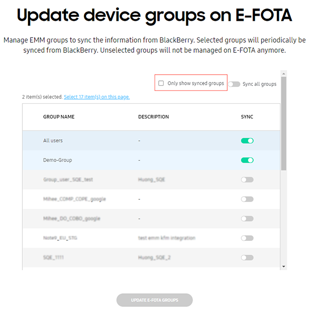
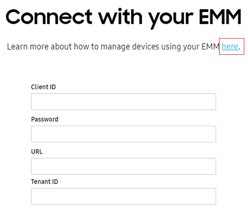
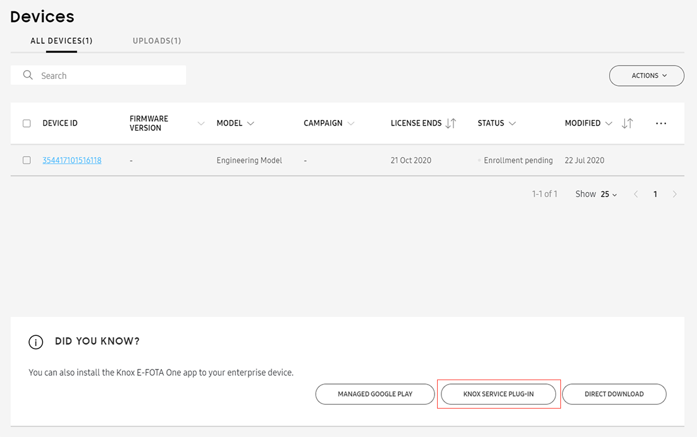

Knox E-FOTA 1.34 release notes
Last updated July 26th, 2023
For a full list of all features, visit the product page for Knox E-FOTA.
Service improvements
The following enhancements were made in the Knox E-FOTA service.
Support for One UI Core devices
The Knox E-FOTA for One UI Core app is now available to support One UI Core devices. This app can be installed through the following:
-
Out-of-box experience (OOBE) — This is applicable only to devices running Android P or later that were uploaded to Knox E-FOTA by a Knox reseller.
-
Play Store or managed Google Play — If you have a mix of One UI and One UI Core devices, you can add both the Knox E-FOTA app and the Knox E-FOTA for One UI Core app to managed Google Play through your EMM console. Otherwise, you only need to add the proper app.
Play Store or managed Google Play will install the appropriate app based on the type of device. That is:
-
The Knox E-FOTA app will be installed on One UI devices.
-
The Knox E-FOTA for One UI Core app will be installed on One UI Core devices.
-
-
Samsung’s content delivery network — Direct download URL.
-
Knox Service Plugin (KSP) — This feature is available starting from KSP’s R18 release.
For a list of all devices running One UI Core, see Samsung devices with One UI Core UI Platform.
Knox E-FOTA requires devices to run Android N or later.
Improved onboarding workflow for Knox Suite
Knox Suite is a bundled offering that includes the following Knox services:
- Knox Platform for Enterprise
- Knox Mobile Enrollment
- Knox Manage
- Knox E-FOTA
An enterprise enrolled in Knox Suite can use all of these Knox services through a single license key.
Previously, an IT admin that signed up for Knox Suite needed to be approved for each Knox service separately.
In this release, the onboarding workflow for some of the Knox services was consolidated to expedite the approval process. This allows IT admins to get started immediately on using the Knox services.
The following scenarios demonstrate three possible Knox Suite onboarding workflows:
Scenario 1 — You are not registered in any Knox service and you register for Knox Suite.
- You will receive emails notifying you your application has been received.
- Knox E-FOTA and Knox Mobile Enrollment are always approved together. That is, if you’re approved for access to one of these, you’re automatically approved to use the other.
- If you’re also approved for access to Knox Manage, a Knox Suite trial license key is generated and injected into your Knox Manage and Knox E-FOTA accounts.
- You will receive emails confirming that your application was approved.
Scenario 2 — You are already registered in a Knox cloud service (Knox Mobile Enrollment, Knox E-FOTA, or Knox Configure) and you register for Knox Suite.
- You will receive emails notifying you your application has been received.
- You are automatically approved for access to Knox E-FOTA and Knox Mobile Enrollment.
- If you’re also approved for access to Knox Manage, a Knox Suite trial license key is generated and injected into your Knox Manage and Knox E-FOTA accounts.
- You will receive emails confirming that your application was approved.
Scenario 3 — You register for Knox Suite but are denied access to one of the Knox services
- You will receive emails notifying you your application has been received.
- You can still be approved for the other services that have not denied you access. Separate approval or rejection emails will be sent for the other services.
- A Knox Suite trial license key is not generated.
Firmware notification emails
Whenever a new firmware becomes available that is compatible to your registered devices, your super admins and sub-admins, who have permission to manage the impacted devices, will receive an email notification. It contains the following details:
- Impacted device models (model and sales code pair)
- Firmware version
- Security patch update
- OS version
- Details on what’s new in the firmware
In cases where multiple firmware deltas were added (for the same target version or for different target versions), only one email notification is sent. We encourage you to sign in to Knox E-FOTA to view and manage your firmware.
Knox E-FOTA admin portal improvements
The following enhancements were made in the Knox E-FOTA admin portal.
Accessing how-to videos related to Knox E-FOTA
To facilitate learning about Knox E-FOTA, a link to Knox E-FOTA how-to videos has been added in the Feedback & Support tab of the Knox E-FOTA admin portal.
Syncing User groups and AD/LDAP groups from Knox Manage
You can now sync user groups and AD/LDAP groups from Knox Manage. Previously, only device groups were supported.
Permission for sub-admins to connect to or disconnect from an EMM
Previously, only super admins had the permission to connect to an EMM or disconnect from it. Sub-admins can now perform this task. Thus, super admins and sub-admins now have the same permissions with regard to managing Knox E-FOTA’s integration with EMMs.
Admin portal UX improvements
The following UX improvements were made on the Knox E-FOTA admin portal.
Managing EMM groups
The following improvements were made in the EMM groups tab:
-
When managing EMM groups, all groups are now shown by default, including those you have not synced with Knox E-FOTA. This allows you to easily view and add other EMM groups. If you want to see only the groups you have already synced, select the Only show synced groups option above the EMM group list.

-
The description in the Update device groups on E-FOTA screen was improved.
-
When no changes have been made in the Update device groups on E-FOTA screen, the Update E-FOTA Groups button remains disabled.
-
In the EMM groups tab, the possible statuses for each EMM group have changed as follows:
Former status name New status name - Synced Not enrolled Group not enrolled Enrolled Group enrolled Group assigned Group assigned - Expired -
The Reconnect EMM option has been removed from the Action menu.
-
When you disconnect the EMM from the Actions menu in the EMM groups tab, a popup appears, providing more descriptive information on how to unsync your synced groups and disconnect your EMM.
-
A link to the Knox E-FOTA admin guide has been added to the Connect with your EMM screen. The documentation provides details on what you need to connect to your chosen EMM.

Installing the Knox E-FOTA app through Knox Service Plugin
To better educate admins on the many ways they can install the Knox E-FOTA client on devices, the Knox Service Plugin (KSP) button was added in Devices > All Devices.

When clicked, the button launches a dialog box showing instructions on how to install the Knox E-FOTA client using an EMM that is set up with KSP. The dialog box also provides links to the following:
- Knox Service Plugin admin guide
- How to set up KSP on different EMMs
- How to configure your EMM to enable the installation of Knox E-FOTA through KSP
Knox E-FOTA client improvements
The following enhancements were made in the Knox E-FOTA client app.
Enhancements in error messages shown during enrollment
To improve the user experience during device enrollment, error messages displayed by the device during enrollment have been made more descriptive.
Checking for app updates
To ensure that updates to the Knox E-FOTA client are immediately installed on devices, the client app will automatically check for updates in the following events:
- After enrollment.
- When the client gets a push update.
- When the device user taps Check for campaign updates.
- When the app is launched.
- After booting the device and recovering a network connection.
- At each periodic poll (heartbeat), which occurs 24 hours after the last poll.
Client UX improvements
The following UX enhancements were made to the Knox E-FOTA client:
-
When the client downloads a firmware update, the download progress is now displayed.
-
When the device does not have an active Internet connection through Wi-Fi, a notification is shown on the app.
-
When creating a campaign, the IT admin sets preconditions that must be met before a device can start installing an update. Previously, if a device did not meet these preconditions, the client would check again after 30 minutes. In this release, this 30-minute interval was changed to 1 hour.
Campaign updates
The following enhancements were made in the Knox E-FOTA campaigns.
Installation conditions and error messages
When a firmware installation fails, the user is now notified of the reason. The following are possible reasons:
- The user triggered the installation at a time that is outside the firmware installation time frame specified in the campaign.
- The device does not meet the required charging status specified in the campaign.
- The device does not meet the required battery level specified in the campaign.
- The device does not meet the required storage amount specified in the campaign.
- There is an incoming call.
- The firmware delta cannot be verified.
Local campaigns
A local campaign is a firmware update that you deliver to your enterprise devices through your internal network. This allows you to reduce outgoing network load when pushing the campaign to devices. Local campaigns are useful when you expect devices to be in an environment with limited connectivity.
Workflow
The workflow to create local campaigns is as follows:
-
Request permission from Samsung to create local campaigns. When a Samsung admin grants you that permission, you can start working with local campaigns.
-
Create a local campaign, assign it to devices in Enrolled state in Knox E-FOTA, and select the target firmware to be deployed. When creating a local campaign, you specify the SFTP details of the local storage device that will host the firmware delta files. When the local campaign is created, the firmware deltas are sent to the local storage device. You will then receive an email containing the status of the file transmission, including the MD5 hash value of each delta file.
-
Copy the firmware deltas to the devices that need to be updated.
-
Use your EMM to create an intent that runs the firmware installation. Then, execute that intent. This causes the devices to start installing the firmware update.
Unsupported operations
The following operations are not supported:
- Assigning a local campaign to a device that is not in Enrolled state.
- Performing sequential updates. Only one delta update can be installed for each device in a local campaign.
- Assigning a local campaign to an EMM group.
- Setting a local campaign as a default campaign to be applied to devices uploaded by a reseller.
- Assigning a local campaign through a bulk action.
- Assigning a normal campaign to a device that has a local campaign assigned to it.
- Modifying the assigned devices in an active local campaign.
Bug fixes
The following bugs were resolved.
Syncing the status info of the client and server
Enhancements were made to ensure that the server and client always show the same statuses.
Searching for the Knox E-FOTA app in Google Play Store on Wi-Fi-only devices
Previously, Wi-Fi-only devices could not find the Knox E-FOTA app in the Google Play Store. This issue has been resolved.
On this page
Is this page helpful?